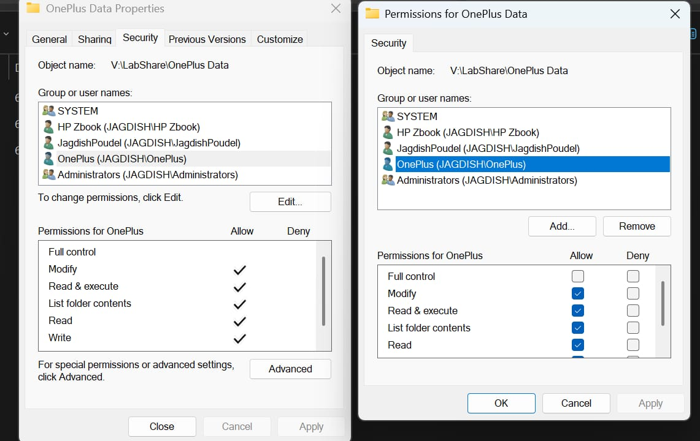
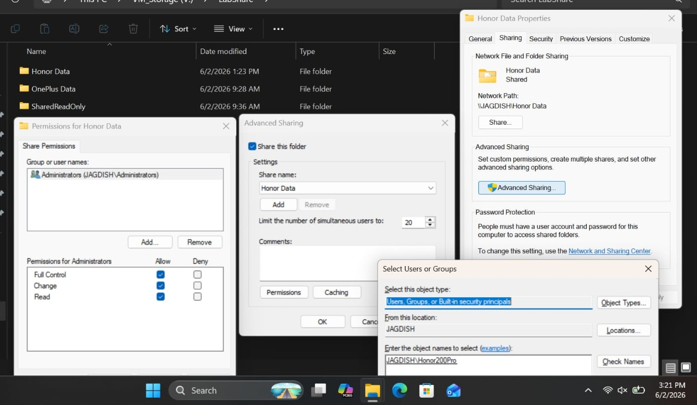
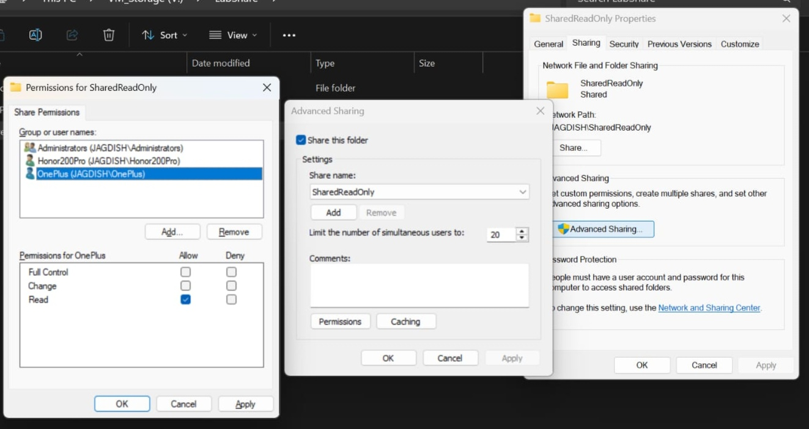
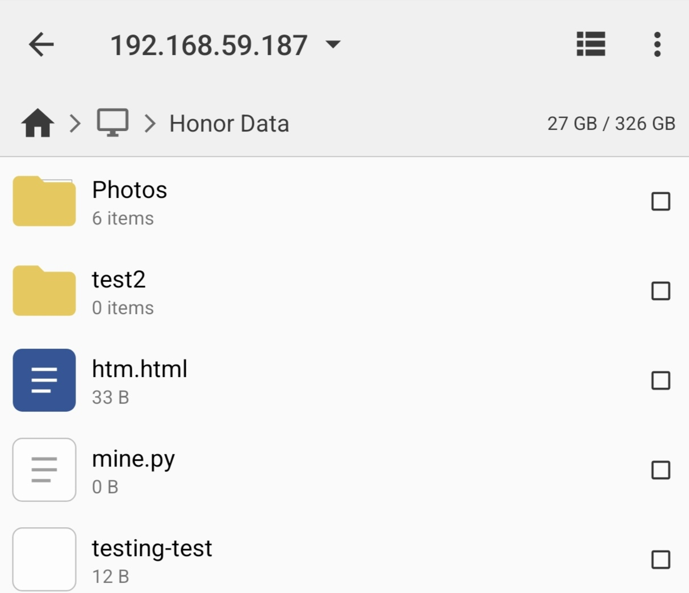
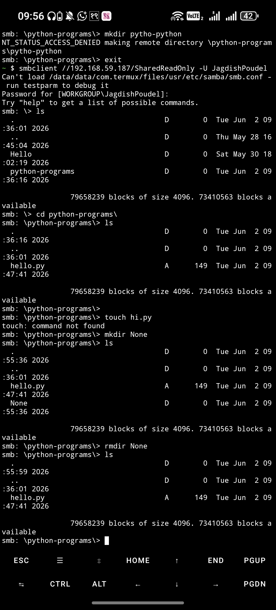

Windows SMB File Sharing & Access Control Lab
This lab focused on configuring Windows SMB file sharing and testing access from Android using Termux. The purpose was to understand file sharing, authentication, share permissions, NTFS permissions, and real-world troubleshooting.
Tools Used
What I Practiced
- Created and managed Windows shared folders
- Configured share permissions and NTFS permissions
- Connected to SMB shares using Termux and smbclient
- Uploaded and downloaded files across the LAN
- Tested read-only and read-write permissions
- Troubleshot authentication and access issues
What I Learned
I learned how Windows file sharing works in a practical environment, how permissions affect user access, and how to troubleshoot common SMB connectivity and authentication problems.
Lab Screenshots

Created and configured SMB shared folder on Windows.

Tested user authentication using Windows credentials.

Connected to SMB share from Android using Termux.

Tested read-only and read-write permissions.

Uploaded and downloaded files successfully.